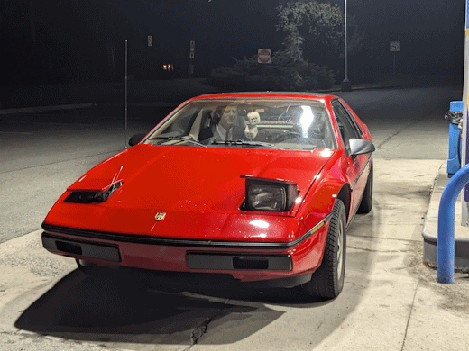

|
|
Guy Fiero - The Headlights |
Pick One:
|
|
The first tragedy to occur post-induction was, naturally, with the headlights. When I drove the car at night for the first time, it was absolutely terrifying because the headlights were aimed in all sorts of wacky ways. It was quite good if you wanted to see what was directly to the left of you, but otherwise left something to be desired. Fortunately, this is an easy fix. There are two screws on each headlight, one to adjust up/down, and another for left/right. I quickly eyeballed these adjustments. I was working a closing shift at work the next day, so I figured I would give my new alignment a shot by driving the Fiero to work. This was a terrible mistake. Naturally, being an asshole with a slick new car, I decided I needed to show off my awesome pop-up headlights. Unfortunately the immense coolness factor was thrown a bit when the right headlight made a loud CLUNK noise, then stopped responding. No matter what, the motor would not stop spinning, and the headlight would not stay up. I quickly figured out how to disable the motor by unplugging it from the relay, then left it as a later problem. Eventually later arrived, and I had a big problem. It was both quite dark and rainy out, and I had only one functional headlight. So there I was, standing outside in the rain with my manager, at 8:15 PM on a Wednesday, desperately trying to use a bale tie to rig the headlight up in my stupid fuckass car. Unfortunately, our efforts were largely fruitless. After struggling for a while, we decided that I would simply have to drive home with one headlight.
 Worst of all, my eyeballed headlight alignment was subpar at best. Fortunately, I immediately knew what had happened, because this is an incredibly common Fiero problem. In fact, I had already anticipated this and made a note about it but took no further measures. Even more fortunately, The Fiero Store sells a rebuild kit to get these motors working again. To be specific, they actually sell two kits. The problem with the motors is that there is a plastic gear inside them that loves to shred. Naturally, that sounds bad, and as such The Fiero Store sells a rebuild kit featuring a metal gear that won't shred, as well as a stock replacement kit featuring a plastic gear. But here's the thing: that gear is actually designed to shred. The idea is that the gear will act as a failsafe, in case for whatever reason power does not get cut off and the motor continues to spin after the headlight reaches the end of its travel. However, this should never happen. Additionally, The Fiero Store acknowledges this, and urges you to ensure that the rest of your headlight system is functioning properly, which mine was. So this leaves me with two choices. I can either:
Or
After thinking about it for a bit, I decided to opt for the plastic gear. I have no reason to think that the metal gear wouldn't work perfectly fine, but realistically the failure was most certainly caused by the original gear being over 40 years old. This is where I got ahead of myself. I bought the rebuild kit with the plastic gear, then when it arrived I pulled the motor out of the car. However, when I opened it up, the gear was perfectly intact. The actual problem was that the bracket fixing the motor to the shaft had popped loose. Despite this, I decided to go ahead with rebuilding the motor anyways. Unfortunately, things were not so smooth sailing. After rebuilding the motor, I ran into an issue where it would never actually just off, just keep clicking. This is very bad, as it'll drain the battery and create lots of heat. Turns out this is an issue with the kit I bought. The rubber bushings included are too soft, causing the headlight to never actually trip the circuit breaker that shuts it off. The solution, of course is to replace it with the metal gear that doesn't have bushings. Oops. Eventually I admitted defeat, and bought the rebuild kit with the metal gear. It arrived, and fortunately worked perfectly. For about an hour. The same bracket had come loose again. I tore the motor apart one final time, and used a hammer with a flat-head screwdriver to dent the lip of the shaft outwards, locking the bracket into place. That'll do it. For a couple weeks, all was right with the world. Then I almost hit a deer. I switched on the headlights to warn other drivers, but afterwards I noticed a strange vibration in the clutch pedal. This was concerning considering the engine is in the back of the car, so I had no idea what could possibly be causing this. That is until I finally got out of the car, and heard a whirring noise under the hood. An all too familiar noise. As it turns out, the phrase "no good deed goes unpunished" is very true, as when I switched on the headlights, the unmodified left headlight motor went and shredded its gear. Fortunately, this time it failed in such a way that the headlight is actually capable of staying up, so I've deemed this a "later" problem. Continue to The Strange Hiccup
|
|